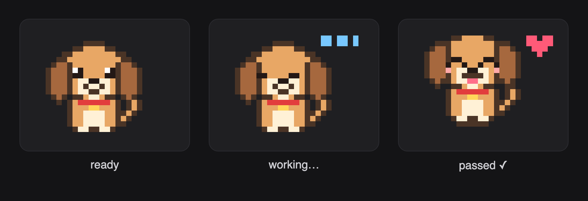
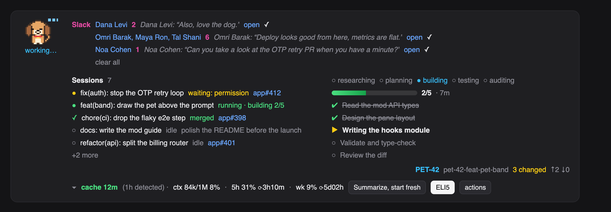

Medium
about 870 wordsI gave my terminal a dog, and now it tells me when my PR is merged
A short story about a pixel puppy, a few hundred lines of TypeScript, and the moment Claude Code became something I could reshape.
There is a 26×18 pixel dog living above my prompt. His name is Bit. He wags when my tests pass, droops when a lint check fails, hops when a task closes, and falls asleep if I walk away for too long. When a tool call waits on my permission he sits up and the band says needs you.
He is also, quietly, the most useful thing on my screen.
Why a dog
I run a lot of Claude Code sessions in parallel. One is on a feature branch, one is reviewing a teammate's PR, one is babysitting CI, one is half an idea I started at lunch. The sidebar lists them, but it does not tell me which one is blocked on me, which one just merged, or which one has been idle for an hour.
I wanted a status board. Nobody builds a status board on a Sunday. People do build a dog.
So the dog came first, as a joke, and the board grew around him because once there was a band above the prompt, every "I wish I could see…" had somewhere to go.

What the band shows now
- Bit, top-left, with his state under him.
- Sessions: every Claude Code session on my machine. The ones waiting on me sort to the top, then the running ones, then merged, then idle. Each row links to its session and its PR.
- The plan: the phase dots, a progress bar, and one row per task, pulled from the task list Claude writes as it works.
- Slack: messages waiting for me, with a tick to dismiss each one.
- The context line: cache age, context used, rate-limit budget, and a button that summarizes and starts a fresh session.
- One favorite action and an actions pane behind it: ELI5 the topic, draft a Slack update, open a ticket, run the checks, take PR screenshots.
None of this is a separate app. It is one hooks module that Claude Code loads at start, drawn with the same element kit the engine uses for its own UI.

How it is built
A Claude Code mod is a folder with three files: a manifest, a one-line file that names the hooks module, and the module itself. A fourth file declares the state the drawing reads.
The module runs in a sandbox of its own. No DOM, no Node, no fetch. Everything outside it is reached through one object, $, with nouns on it: $.ui, $.clock, $.state, $.fs, $.process. You register hooks on events, and every hook has the same shape: the engine object, the event, and a next to pass it on.
on('ui.render', { component: 'AbovePrompt' }, async ($, e, next) => {
const { Box, Text, Svg } = $.ui.resolve(e)
return (
<Box flexDirection="row">
<Svg source={dogSvg(pose)} alt="Bit" width={39} height={27} isInteractive />
<Text>{pose}</Text>
</Box>
)
})That is the whole idea. The band is a render hook. The /pet command is a command hook. The plan fills from a tool-call hook that watches Claude write its task list. The sessions board is a five-second heartbeat that writes a JSON snapshot per session and reads the others back.
The sprite is a list of strings, one character per pixel, mapped through a palette. On the desktop it becomes an SVG with SMIL animations, so the frames flip without redrawing the band. That detail matters: a redraw replaces the buttons under your pointer, and a wagging tail that steals your click is a bad dog.
Why this is cool
Not because of the dog.
It is cool because the surface I spend my day in stopped being fixed. I did not fork anything or patch a binary. I wrote a module against a typed API, the engine validated it, told me which state keys I forgot to declare, and loaded it. When something was wrong, one dim line in the transcript said what and why.
Every editor promises extensibility. Most deliver a plugin API you learn once a year. This one I learned in an afternoon because the model that runs in the terminal also knows how to write for it. I described the band I wanted, in sentences, and reviewed the result. Then I kept describing: move the dog to the corner, make him smaller, put the cache line at the bottom, why is there a gap next to Slack. Each one was a one-minute round trip.
That loop is the thing. A tool you can reshape in conversation, while you use it, is a different kind of tool.
Try it
The mod is open. Install it from a terminal Claude Code session:
/plugin install pixel-pet --marketplace eranltd/pixel-petOr read the README, which walks through building your own pet from four files. Start with a cat. Give it a tail that flicks. See where it takes you.